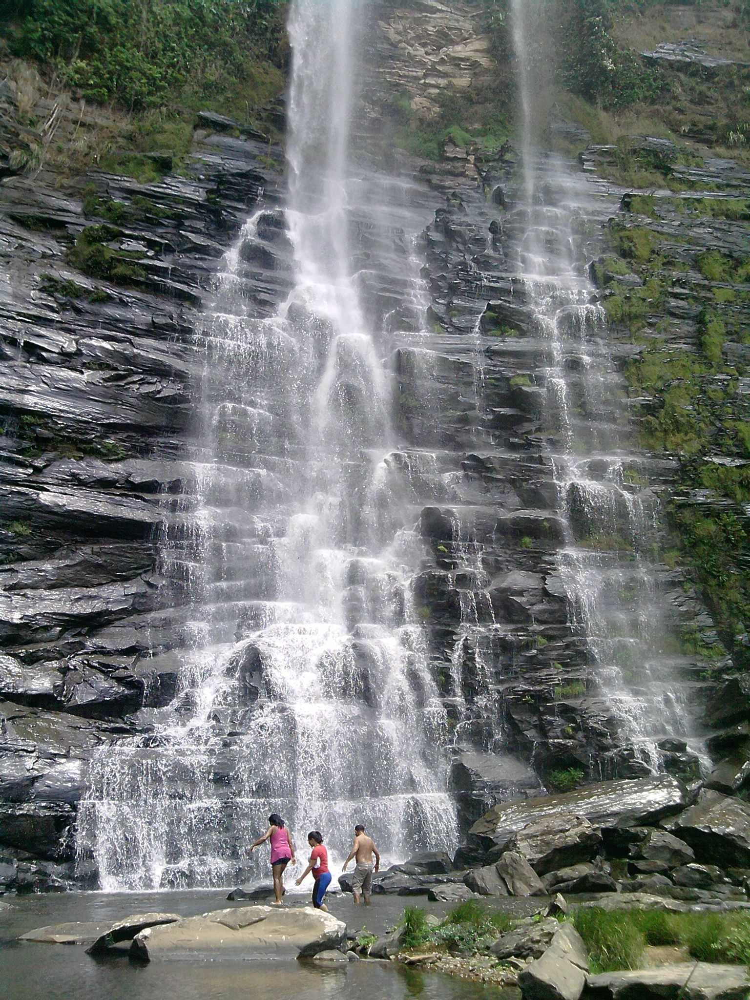

Forma de Localização
Arraste o marcador em vermelho para selecionar sua Localização
A primeira igreja da cidade

Cachoeira do Rio Urucuia
Igreja Matriz Nossa Senhora da Pena

A Igreja Matriz é uma das primeiras Igrejas da cidade de Buritis MG, tendo como religião a Católica, a parede da parte da frente da igreja é rebocada com pedras coloridas e é um ícone da cidade de Buritis-MG